Working with a pretrained flow model
For this part i used PixNerd to test how flow matching works in practice, first by recovering images from noise and then using the same ideas to create new images, control them with prompts and build optical illusions.
Constructing noisy training inputs
I started by taking the same input image and mixing it with Gaussian noise at different values of t, i kept the noise fixed so the difference between the images comes from changing the time and not from getting a completely different random noise every time. When t is small there is more noise and when it gets closer to 1 we keep more of the original image, which is the idea we use again when we train our flow model in Part B.
xₜ = (1 − t)x₀ + tx₁where x₀ is Gaussian noise and x₁ is the clean image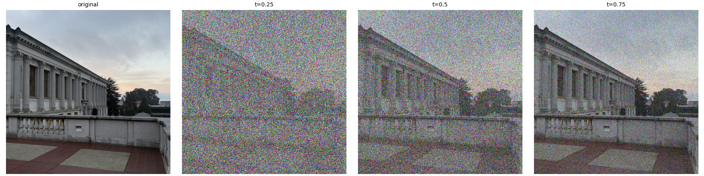
Classical Gaussian denoising
First i tried Gaussian blur as a simple baseline, and for each noisy image i corrected the image amplitude and then blurred it with a Gaussian filter. This does remove some of the random high frequency noise but the issue is that we also blur edges and small details that actually belong to the original image, so it is useful as a comparison but it cannot really know the difference between noise and image structure.
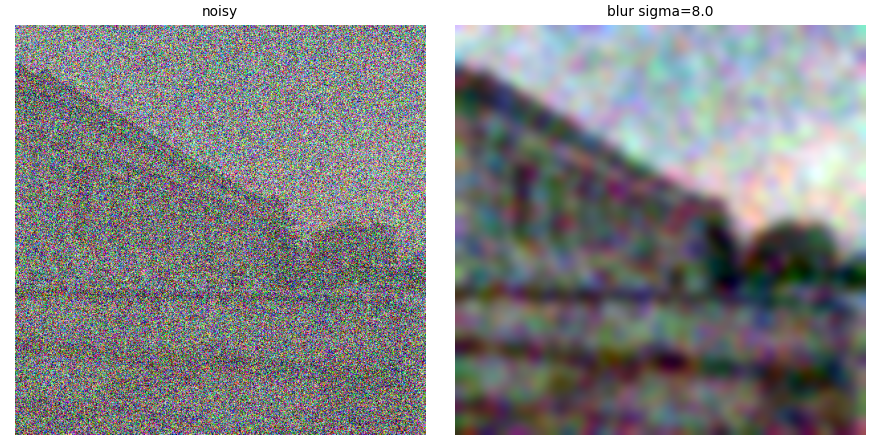
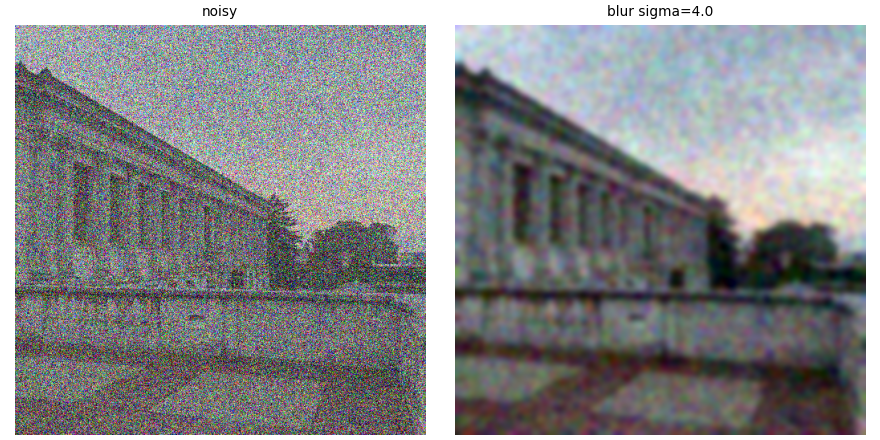
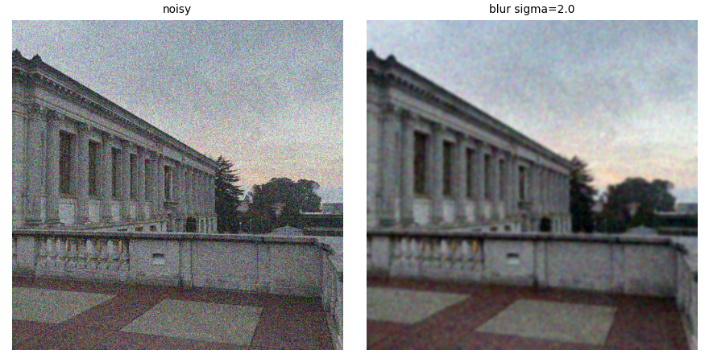
One-step denoising
For this part i used the pretrained PixNerd flow model to predict the velocity at the noisy image and the current timestep, then i used that one velocity prediction to estimate where the clean image should be. It is a lot more informed than only applying Gaussian blur because the model has learned how images are structured, but one prediction is still an approximation since the correct velocity can change as we move toward the final image.
x̂₁ = xₜ + (1 − t)vθ(xₜ,t,c)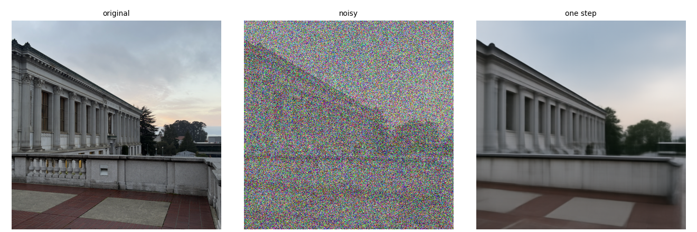
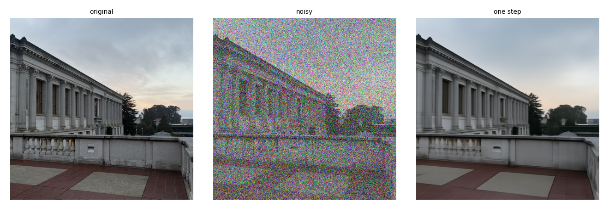
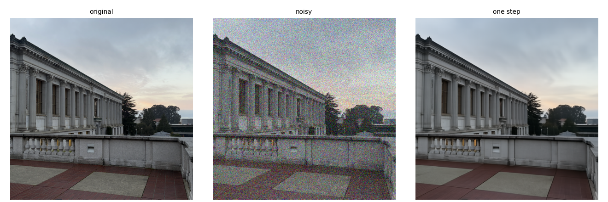
Visualizing the predicted velocity
Here i wanted to see what the model was actually adding to the noisy image, not only what the final picture looked like. Since i saved the original image and the exact noise used in the interpolation i could compute the ground truth velocity x₁ − x₀, then compare its update to the velocity predicted by the model. The error heatmaps show where those two updates disagree and help explain why a one-step result is not always identical to the original.
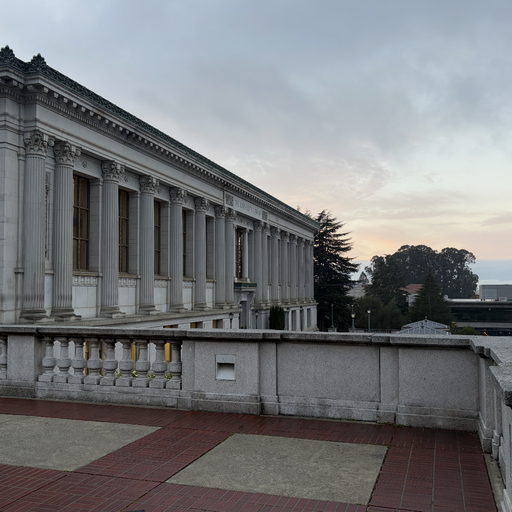
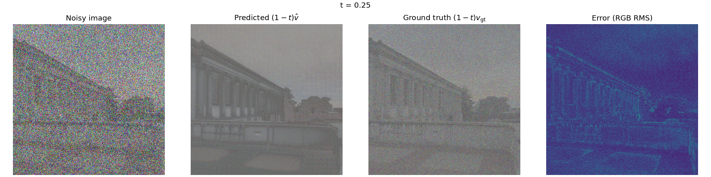
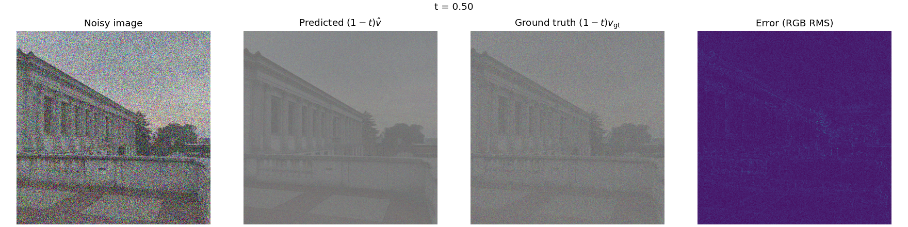
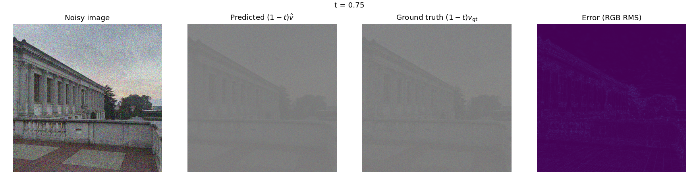
Iterative denoising with Euler sampling
Instead of making only one large jump to the end i implemented Euler sampling, so we predict the velocity, take a small step, and then predict another velocity using the updated image. I started from the noisy image at t = 0.5 and took 25 updates to reach t = 1, and the trajectory lets us see how the image changes during that process. The comparison puts Euler sampling next to Gaussian blur and the one-step result using the same starting image, which is important because otherwise we would not be comparing the methods fairly.
xₖ₊₁ = xₖ + Δt · vθ(xₖ,tₖ,c)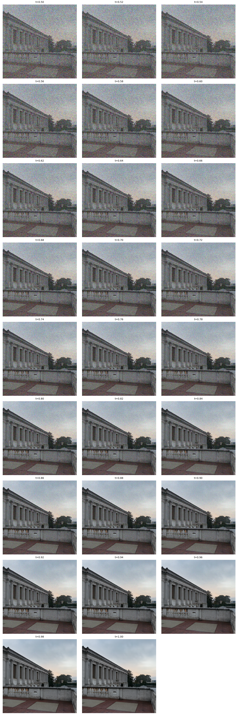
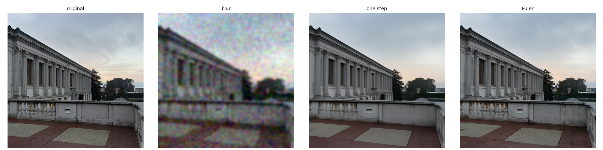
Generating images from pure noise
For image generation i used the same Euler sampler but this time i did not give it any original picture to recover, i started with random Gaussian noise at t = 0 and used the text prompt a high quality photo. I generated several samples with different random seeds, so the starting noise changes between images while the prompt and the generation method stay the same, and this is what makes it possible for the pretrained model to create a new image instead of just editing an image we already had.


Classifier-free guidance
I then added classifier-free guidance or CFG, the idea is to run the model twice at the same image and time, once with the actual prompt and once with an empty prompt, and then use the difference between their velocity predictions to push generation more toward what the text is asking for. I used a guidance weight of 7 and kept the initial random seeds the same as the earlier conditional samples so we can compare the effect of guidance itself. Stronger guidance can help with the prompt, but it can also reduce variety or create artifacts so more guidance is not always better.
vCFG = vuncond + w(vcond − vuncond)


Image-to-image editing
Now instead of starting from pure noise i started from an existing image, added different amounts of noise and let the model move it back toward a natural image. The interesting thing here is that the starting time controls how much freedom the model has, at low starting times the image has much less information left so the model can change it a lot, while at higher starting times it has much more of the original structure to follow. I tested the Campanile, my other input images, a web image and two drawings to see how the same method behaves with different kinds of inputs.


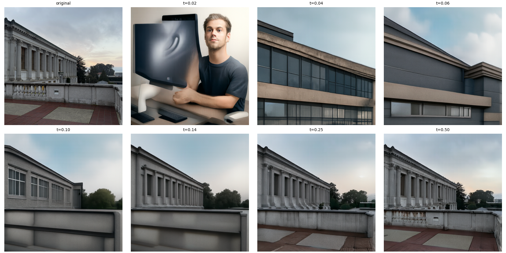

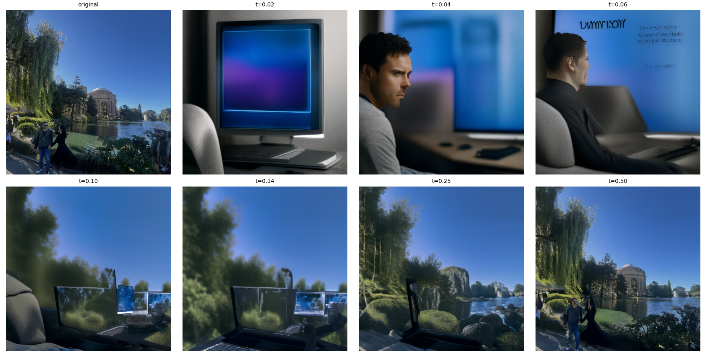

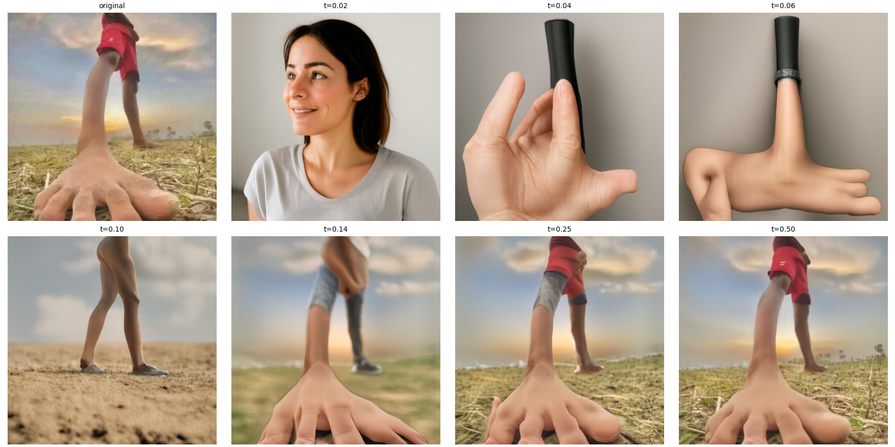

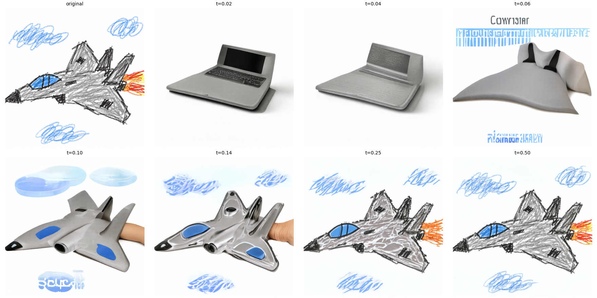

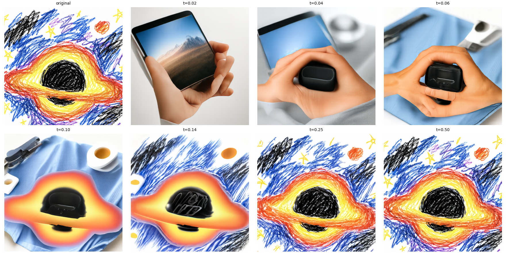
Text-guided image editing
In this experiment i kept the same image-to-image process but replaced the generic photo prompt with text describing what i wanted the new image to look like, this adds another way to control generation because now both the starting image and the text influence the output. The starting time is still important since at lower values the model has more room to follow the prompt and at higher values it tends to preserve more of the input. The exact prompts used for each experiment are written in the Part A notebook.
Before submitting: Add the exact prompt text for each of these three examples from your Part A notebook, as the assignment asks for the prompts to be shown with the images.

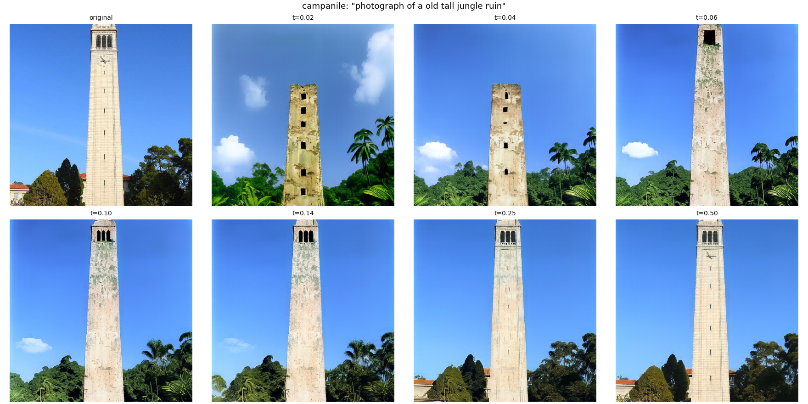

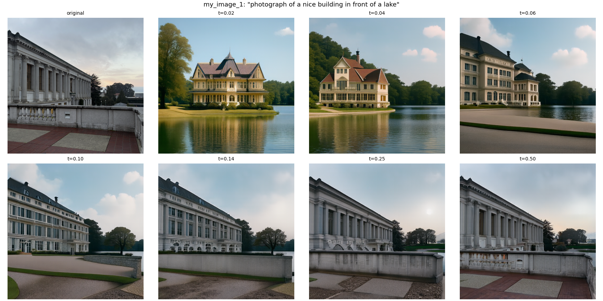

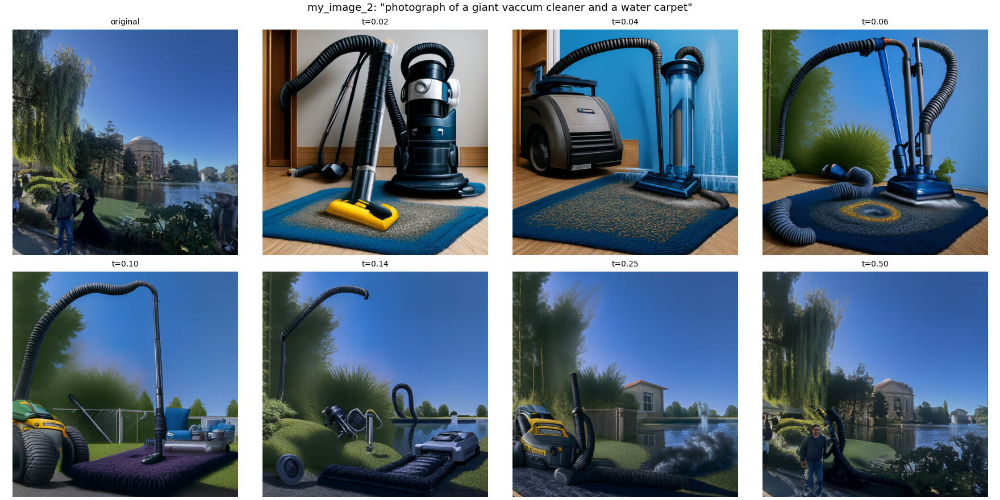
Visual anagrams
For the visual anagrams i used two prompts and tried to make a single generated image that works in two different orientations. At each Euler step i predict a velocity using the first prompt, then rotate the image by 180 degrees and predict another velocity with the second prompt, then rotate that second velocity back and average the two predictions. This means the two prompts both affect the generation process, and ideally the final image tells one story when it is upright and another story when it is upside down. I made two examples and included both the original results and the upright versus rotated views.


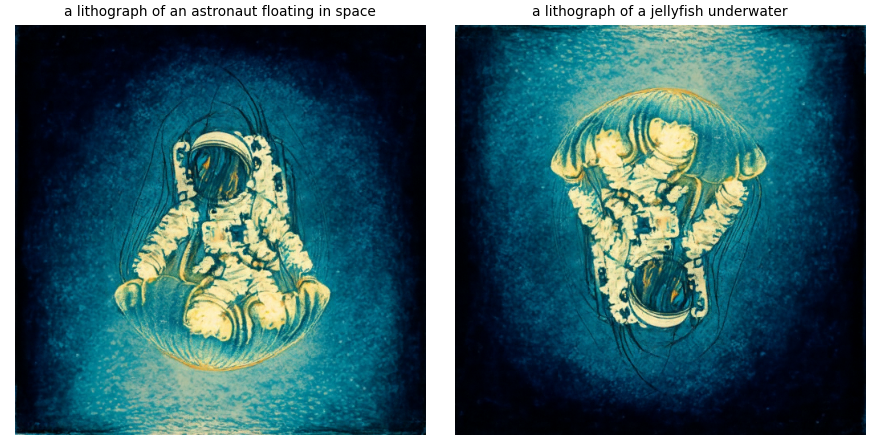

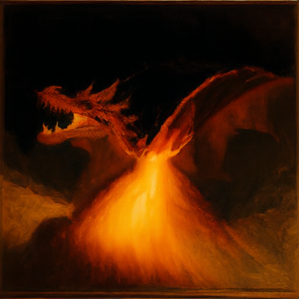

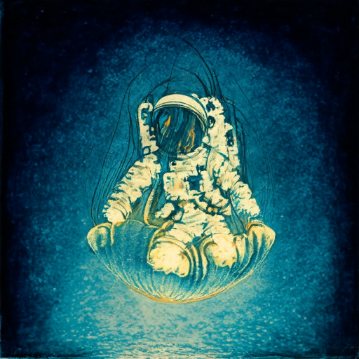
Hybrid images
Finally i generated hybrid images by combining two different velocity predictions, one prompt supplies the low frequency structure and the other supplies high frequency details. In each Euler step i apply a Gaussian low-pass filter to the two velocity estimates and keep the low frequencies from the first prediction and the high frequencies from the second. The idea is that when we look at the generated image up close we notice the fine details, while from farther away or when it is shown smaller the broad low frequency structure is easier to see. These are my two hybrid results, and i show each once large and once small so it is easier to compare those two views.
vhybrid = LP(va) + vb − LP(vb)

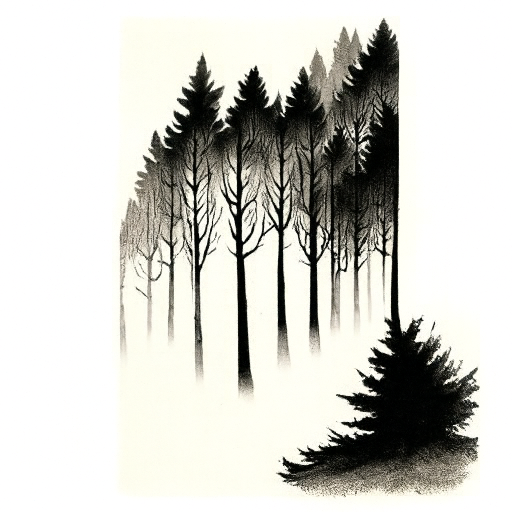